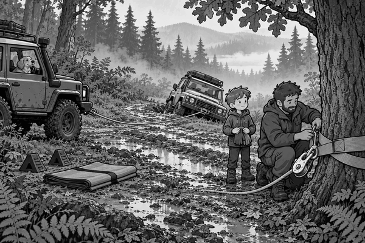

FICTION
Rain drummed on the roof all night.
By morning, the forest track was full of brown puddles.
Tom, Dad and Scout were checking the path in their 4x4.
Then the radio crackled.
“Ranger vehicle stuck near Pine Bend,” said a voice.
Dad turned the 4x4 around.
They found Ranger Mia beside a muddy ditch.
Her green 4x4 had slipped sideways.
Two wheels were deep in soft mud.
“I stopped before it sank farther,” said Mia.
“Good,” said Dad. “Spinning the wheels would dig deeper holes.”
Dad parked on firm ground.
He put blocks behind his wheels.
Tom looked at the two vehicles.
They were not in a straight line.
A strong oak tree stood beside the bend.
“Can the tree help us?” Tom asked.
“Yes,” said Dad. “It can help us change the direction of the pull.”
First, Dad wrapped a wide protector strap around the tree.
The wide strap spread the force and protected the bark.
Then he joined a pulley block to the strap.
The winch rope ran from Dad’s 4x4, around the pulley and towards Mia’s vehicle.
Recovery fact: A pulley can turn a winch line around a corner. This lets the pulling vehicle stay on safer, firmer ground.
Dad checked every hook and shackle.
He placed a heavy blanket over the middle of the rope.
Tom and Mia moved far away from the line.
Scout waited inside the 4x4.
“Never stand near a tight winch rope,” Dad said.
Mia climbed into her vehicle.
Dad lifted the winch controller.
The rope became tight.
The winch hummed.
Mia turned her wheels towards the track.
Slowly, the green 4x4 moved.
Mud sucked at its tyres.
The winch kept pulling with steady force.
One wheel climbed out.
Then the second wheel reached firm stones.
Dad stopped the winch.
The rope became slack again.
Only then did everyone walk forwards.
Mia checked beneath her 4x4.
Nothing was leaking or broken.
Tom helped Dad pack the strap, pulley and blanket.
The wide protector strap had left the oak bark unharmed.
Mia smiled.
“That was a clever pull,” she said.
Tom shook his head.
“It was a careful pull.”
Scout barked from the warm back seat.
The ranger’s 4x4 was free.
And the forest was ready for another adventure.
1. Why did Dad park on firm ground?
2. What did the pulley change?
3. When did everyone walk towards the vehicles?